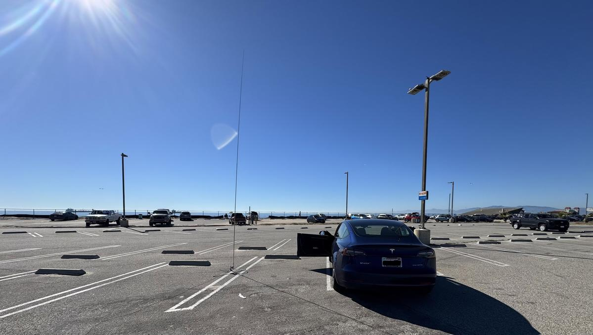

QSO Map — DM03tu — Los Angeles, CA
TODO
Interactive QSO map — pending implementation

Status
Under
Construction
Personal site of N6CBL — Cameron Gable. Avionics systems engineer, amateur radio operator. I operate portable HF from Southern California, activating parks and coastal locations with an Elecraft KX2 and quick-deploy field antennas. This site will carry tools, radio experiments, 3D prints, writing, and whatever else warrants a permanent URL.
Planned content
| Path | Description | Status |
|---|---|---|
| / | Home — index of everything on the site | WIP |
| /log/ | QSO log — all contacts, POTA activations, and field sessions. Callsign search. | WIP |
| /stats/ | Ham radio statistics — contact map, WAS progress, bands, modes, activity by hour | WIP |
| /blog/ | Posts: technical, radio, builds, misc | Planned |
| /tools/ | Browser-based utilities — radio, math, general | Planned |
| /prints/ | 3D print catalog with downloadable files | Planned |
| /radio/ | Logbook, APRS data, SDR resources, band notes | Planned |
POTA — Parks on the Air — Recent Activations
Fetching activation log…
| Date | Reference | Park | Location | QSOs |
|---|